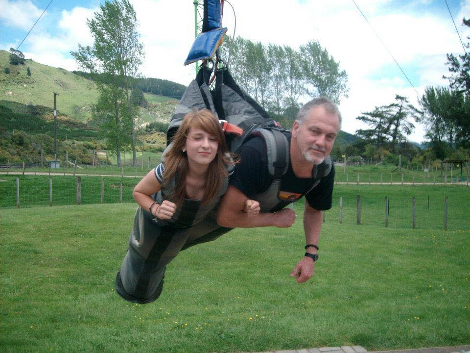
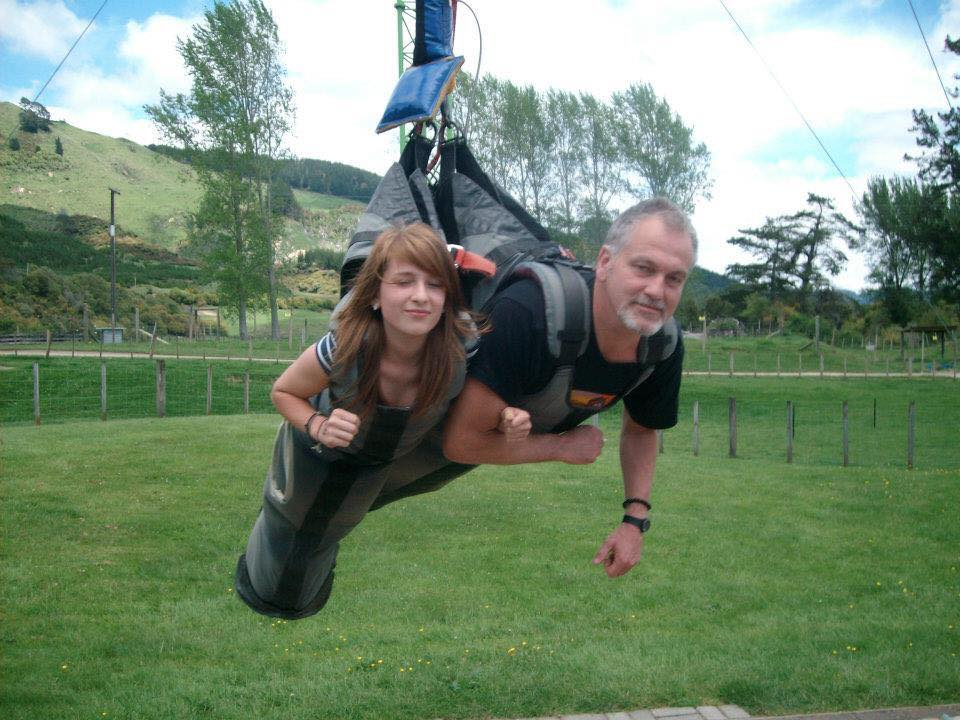

Technology
Travel
Motorbikes
Cooking
Art
Gym
Health
.
Technology has been a passion of mine since a young age, I then developed a passion for coding and gained a diploma in software development.
Travel has become a love of mine. I enjoy trying new things and exploring. You get to meet so many amazing people and it's lovely how they take care of you.
Motorbikes are a big hobby of mine. I have recently discovered my love of them but have always loved adrenaline and racing. I have had my motorbike for a year now.
Cooking is a way for me to get in my zone and get a bit creative, I love to cook and bake and impress people with my skills. I like putting in the hard yards to eat the good feast.
Art has been a passion and love since I could pick up a pen. I enjoy anything creative but really like sketching realism. Art is a great way to vent your thoughts.
Gym has been a part of my routine for the last 3 years. I enjoy pushing myself and achieving things I never thought I could. It makes you feel really refreshed and proud.
Health is very important to me and I enjoy leading a healthy lifestyle. It makes me more productive and happy. I enjoy when people come on board because they admire my way of life.
This page was made by Amara Fox